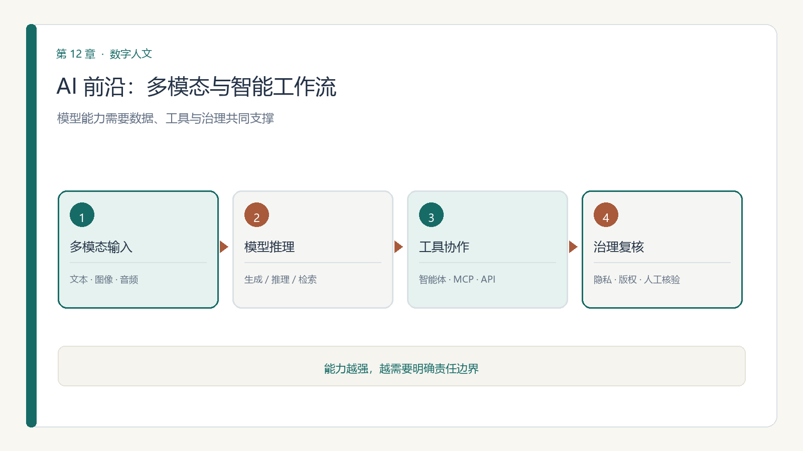

第 12 章 模块十二 人工智能前沿进展
学习目标：完成本章后，你应能（1）概述大模型、多模态模型与 AI for Science 的主要进展；（2）说明智能体、MCP 与 RAG 如何参与数据工作流；（3）结合数字人文案例评估 AI 工具的适用范围；（4）识别版权、隐私、算力可及性与责任治理问题。

12.1 引言：当数据科学遇见生成式 AI
数据科学的方法体系（采集、清洗、建模、可视化）正与生成式 AI 深度融合：LLM 承担代码生成、文档理解与推理，智能体自动执行分析流水线，多模态模型处理图像/视频数据。本模块以"数据科学 + 数字人文"的视角，梳理近三年关键进展。
12.2 大模型与推理模型：数据分析的新引擎
- 推理模型（o1/o3、DeepSeek-R1、Gemini 2.0 Flash Thinking）在数學、编程、科学问答上表现突出，可辅助假设生成、公式推演与结果校验。
- 科研范式变革：2024 年诺贝尔物理学奖授予机器学习先驱（Hinton、Hopfield），化学奖授予蛋白质结构预测（AlphaFold）相关研究者，凸显 AI 驱动科研（AI4Science）的范式地位。
12.3 自动化数据分析与 AI for Science
- LLM + 代码解释器可完成数据清洗、统计建模与可视化的端到端草稿，研究者聚焦问题设计与结论解释。
- 案例：DeepSeek-R1 以极低训练成本展现强推理，启示"小而精"的领域模型在科研中的可行性。
12.4 多模态与生成式 AI 在数据科学中的角色
- 图像/视频生成（Sora、Veo 2、可灵）可用于数据叙事与科普演示；视觉模型（YOLO、ViT、Swin）支撑图像数据的自动标注与检索。
- 跨模态检索（如文化遗产纹样、壁画）将文本与图像映射到同一语义空间。
12.5 AI 智能体与数据工作流（MCP）
- MCP 标准化了模型与数据库/API 的连接，使"数据智能体"能自主查询、转换、建模；多智能体协同适合大型分析项目。
- 实践建议：以受控沙箱运行智能体，限定工具权限，保留操作日志。
12.6 RAG 与知识增强
- RAG/GraphRAG 让分析基于可信文献与领域知识库，减少幻觉；对数字人文而言，是连接"数据"与"人文语境"的桥梁。
12.7 数据治理、版权与负责任 AI
- 治理要点：训练与微调数据的版权合规、个人信息保护、结果可解释与可审计。
- 法规：EU AI Act（2024 生效，分阶段）要求通用 AI 模型公开训练数据摘要（Article 53）、透明标注（Article 50）；我国对生成式 AI 服务有明确合规要求。
- 对数据科学的启示：把"数据质量"与"合规"前置到项目设计阶段。
12.8 案例：AI 赋能数字人文研究
- 红色档案 LLM 知识发现（人大，2025）：向量库 + RAG + 多轮问答实现交互式编研。
- 文化遗产计算（CCF 专题，2025-12）：图像计算解码文物"基因"，多模态对比学习溯源传播史。
- 这些案例说明：AI 不是取代数据科学与人文，而是将两者推向"可计算、可交互、可叙事"的新阶段。
12.9 实践：在教学中引入 AI 工具
建议课程设计"AI 辅助数据分析"实验：给定可信数据集，用 LLM 起草分析代码、用推理模型校验结论、用智能体串联流水线，并以人工复核与可复现性为评分重点。
12.10 思政融入与负责任创新
课程思政
负责任创新与科技报国：数据科学与 AI 是国之重器，引导学生树立"数据合规、算法向善、结果可信"的职业伦理，理解技术自主可控与开源开放的时代意义，把个人学习与国家战略需求相结合。
12.11 讨论：算力、经费与学术共同体的分化
最后一个更硬的问题：AI 正在改写科研的成本结构，进而改写学术共同体的格局。
算力成了新的"经费形态"。 过去科研经费主要变成人力与设备，如今越来越多地变成 GPU 小时。2026 年，多国把"给算力"写进科研政策：英国"AI 研究资源"(AIRR) 计划向高校团队开放超算 GPU 时数（单个项目 5 万至 140 万 GPU 小时，本轮合计约 800 万 GPU 小时，且不附带直接资金）；美国 NSF 设立约 1 亿美元的"州与区域 AI 基础设施枢纽"，每个枢纽 400 万至 1200 万美元（值得注意的是：NSF 出资协调、培训与人才，硬件购置由区域联盟自筹）；我国国务院印发《关于深入实施"人工智能+"行动的意见》，多省份已出台举措，提出建设高校科研算力共享网络、探索"算力券"奖补、构建学科领域科学大模型。
由此产生的张力是"可及性不均"。 算力昂贵且集中，若只有少数机构负担得起，学术共同体可能进一步分化为"有算力的中心"与"无算力的边缘"——这比论文数量的差距更难追赶。各国把"扩大算力可及性"郑重写进政策，正说明这一点已被看见。
破局大致有三条路：
- 开源：开源模型（如本模块提到的开源推理模型）让算力有限的高校与个人也能用上强模型，是缩小差距最现实的力量；
- 共享：区域算力枢纽、"算力券"、跨校共享网络，把固定成本摊薄；
- 错位：人文与社会科学的数据规模小、算力需求相对低，本就不必挤进大模型的军备竞赛。
人文学科的机遇与它自己的瓶颈：人文智能的新范式把人文研究推向了前台，但人文学科也面临"数据荒"与"数据孤岛"。有学者指出，AI 在数据侧已不能只靠互联网公开语料"堆量"，而需要各细分领域的高质量数据与专家的隐性知识；因此在古籍、历史档案这类数字化基础较好的领域，建立明确的数据使用协议与贡献者权益、面向认证学者有限开放，可能比再训一个大模型更关键。
最后一个提醒：当 AI 让"产出论文"变得廉价，评价体系若仍停留在"唯论文、唯数量"，就会把 AI 的产能转化为学术系统的通胀。已有科研机构在调整评价标准，对依托 AI 完成的高质量原创研究与交叉学科成果给予正向激励，摒弃片面导向。技术变得更快，制度与评价必须同步迭代——否则被奖励的，将是产量而不是贡献。
给这门课收个尾：AI 带来的机遇，属于"能提出好问题、能驾驭工具、又守得住诚信"的人。方法会继续迭代，算力会继续变便宜，唯一不会过时的，是你对真问题的敏感与对证据的诚实。
12.12 本章小结与思考
本章的核心线索是：AI 扩展了数据分析的能力，也把数据治理、版权、隐私、算力公平和责任归属推到研究流程中。使用新工具时，先明确问题与数据边界，再核查模型证据并保留人工判断。
思考题
- 在你的研究问题中，哪些环节适合交给 AI，哪些判断必须由研究者负责？
- 如果算力资源有限，如何通过开源模型、共享资源或缩小任务范围保持研究可及性？
- 为一个数字人文 AI 项目列出至少两项版权或隐私风险，并写出相应的复核措施。
参考文献
[1] OPENAI. Learning to reason with LLMs[EB/OL]. (2024)[2026-08-05]. https://openai.com/index/learning-to-reason-with-llms/. [2] GUO D, YANG D, ZHANG H, et al. DeepSeek-R1 incentivizes reasoning in LLMs through reinforcement learning[J]. Nature, 2025, 645: 633-638. DOI: 10.1038/s41586-025-09422-z. [3] The Nobel Prize in Physics 2024[EB/OL]. (2024)[2026-08-05]. https://www.nobelprize.org/prizes/physics/2024/. [4] ANTHROPIC. Model context protocol[EB/OL]. (2024-11)[2026-08-05]. https://modelcontextprotocol.io/. [5] 杨建梁, 王一多, 黄美雯, 等. 基于大语言模型的红色档案资源交互式知识发现研究——以《南方局党史资料大事记》为例[J]. 图书情报工作, 2025, 69(15): 112-123. DOI: 10.13266/j.issn.0252-3116.2025.15.010. [6] 欧洲议会, 欧盟理事会. 欧盟人工智能法案: Regulation (EU) 2024/1689[S]. 2024.